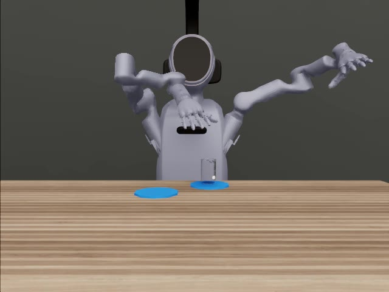

FINDING 01
标准任务已有多次成功
航点＋本体输入条件下，抓起 20/20、搬运 17/20、插装 18/20。
查看全部 15 个条件 →Astra as a Robot Controller
从标准机械臂操作到 100ml 烧杯往返：
按输入信息、控制接口与试验分母，报告模型真正完成了什么。
Astra 能通过通用机器人控制接口完成抓取、搬运、插装和多阶段杯操作。结果同时显示：输入信息、动作接口与执行反馈，决定了成功能力的边界；单次长程成功还不能证明稳定或实时控制。
以下结果来自已有的 MuJoCo / Panda 与 SafeLab FR3 / PsiBot 实验。每组单独保留协议、分母和中断，不跨平台合并成功率。
航点＋本体输入条件下，抓起 20/20、搬运 17/20、插装 18/20。
查看全部 15 个条件 →插装在低信息航点条件下为 0/20。FR3 消融 pilot 样本小，结论保留为探索性。
查看输入消融 →100ml 杯完成 A→B→A 与两次撤手，235 次模型调用、约 4.75 小时墙钟。
查看阶段与三机位视频 →
▶ 查看完整往返原视频最终 A 点中心误差 7.96 mm。原生阶段检查与既有视觉审查均留存，三路视频为同一条连续录像。
本案例带物体位姿、尺寸与速度等特权状态输入；是经过开发取得的成功轨迹，未形成正式成功率。
研究对象是 GPT-6 Astra 在机器人动作路径中的能力。主要实验由模型直接产生动作或控制程序，通用控制器执行；未把 ACT / DP 训练成绩或 CPU 检查计为 Astra 控制结果。当前没有同场景 Astra＋冻结学习策略的混合对照。
| 试验组 | 平台与任务 | 模型 / 输入 / 动作 | 试验范围与成功定义 |
|---|---|---|---|
| Panda 标准任务MAIN MATRIX | MuJoCo / robosuite Lift · Can · Square | Astra medium · 服务器 prompt v3 delta / waypoint / code 低信息 / 本体 / 特权状态 | 15 条件 × 20 回合 = 300 各任务原生终态成功；早期 70 回合另列 |
| SafeLab E3HISTORICAL | FR3 抓取 / 放置 PsiBot 抓起保持 | medium / xhigh 按原任务输入与控制协议 | FR3 同 10 个 seed 的推理档位对照 各任务独立分母；基础设施中断保留 |
| FR3 输入消融PILOT | 原生仿真 · FR3 抓取、放置、释放撤手 | Astra xhigh · 7 条件 最多 30 请求 / 120 秒动作 腕相对 EEF＋夹爪，DLS/IK 120 Hz | 9403 / 9404 两初态，共 14 次尝试 放置≤4 cm，直立≤15°，稳定≥1 s，速度≤5 cm/s，松手并撤离 |
| 后续 20×7INCOMPLETE | FR3 放置 / PsiBot 抓取 | 两平台 × 20 seed × 7 输入条件 独立于 pilot 的冻结批次 | 计划 280；9月18日公开状态有效 27 FR3 21/140，PsiBot 6/140 |
| 100ml 往返CASE STUDY | PsiBot · 100ml 烧杯 A→B 放下撤手→A 放下撤手 | Astra xhigh · 特权 scene_state 235 条实际上游模型回执核收 物体、杯垫、手部几何可见 | 选取的开发成功案例，非 1/1 成功率 4 原生阶段、完整三机位原录像 |
rgb_only 保留当前 RGB、任务说明、自身文字记忆和分类执行反馈，不能理解为“完全没有任何文字先验”。Panda 的 none 也保留任务说明与部分历史；其 proprio 包含标定、像素辅助或先验。
成功率 SR = 成功数 / 对应组的分母；中断次数在旁列出。多次试验显示 Wilson 95% 区间。过程阶段与最终成功分开记录；没有统一阶段分的旧试验保留空值，不回填 RoboDojo Score。
实验预算和控制器跨平台、跨接口存在差异；code 是生成控制程序的能力，不与短动作接口作完全同预算解释。
先选试验组，再查看该组的任务、设置和分母。这里不把不同任务、开发样本与未完成批次合成一个总成功率。
正在读取结果表……
保留成功、失败和中断三种结果。观看原录像，再对照阶段与真正送入模型的输入，区分动作完成、判据未满足和基础设施失败。
三机位同一条连续原录像；这里引用既有原生与视觉验收，没有新增逐帧视觉认证。阶段时刻为仿真时间，播放器时间由原始视频保留。
输入：物体位姿 / 尺寸 / 速度、杯垫几何、机器人手部标记与部分网格边界、先前状态；评估器阶段及接触计数不反馈给模型。实际模型回执为 gpt-6-astra / xhigh。
判据：抬升≥5 cm；放置中心≤2.5 cm、底部高度≤8 mm、直立≤15°、稳定≥1秒且速度≤5 cm/s；撤手距离≥12 cm。原生最大抬升约5.81 cm。
效率：输入 5,051,123 token，输出 439,318 token，未知用量请求 0。历史标准等价估算 $67.61，非当前价格或实际账单。墙钟约4.75小时意味着本案例不能当作实时能力证明。
图片是当时实际送入模型的 RGB，下面是数值动作和执行回读。已有逐决策 JSON 摘要核对；图片链接不代表本轮对全部 1,104 张 PNG 的重新认证。
Astra 通过明确的控制合同能完成机器人操作；充分的状态和合适的接口能帮助完成精细动作。数值动作与执行反馈可以定位模型行为和控制误差。
严格隔离输入的跨布局泛化、长程稳定成功率、实时动态环境，以及同场景 Astra＋冻结学习策略的配对对照。现在没有这些维度的统一正式分数。
PROPOSED · NOT EXECUTED 以上是下一轮协议提案。本次仅整理与发布已有实验，没有新增模型或 GPU 试验。查看完整协议 →
370 条 robosuite 历史卡＋30 集公开决策记录＋4 份新批次 result＋collect41。聚合表与逐次记录存在重叠，不能相加；未取得逐次 JSON 的23条 campaign 历史结果只在分组表中保留。
数据核对 2026-10-09；后续20×7状态取自2026-09-18公开记录。不同批次的日期、分母与模型身份证据均保留，不代表今日运行或资源状态。
报告组织借鉴以下资料，采用其方法说明、分组结果、行为案例和证据入口的呈现方式。我们的任务、预算和判据不同，未声称复现外部榜单。